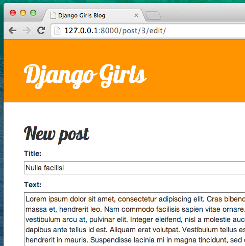

I form di Django
Infine vogliamo creare un bel modo per poter aggiungere e cambiare in nostri blog posts. Django admin è bello, ma è alquanto difficile da personalizzare e rendere carino. Con i forms avremo il potere assoluto sull'aspetto della nostra pagina web-possiamo fare praticamente qualsiasi cosa vogliamo!
La bella cosa dei Django forms è che possiamo sia inventare un nuovo form da zero che creare un ModelForm che salverà il risultato del form sul nostro modello.
Questo è esattamente quello che stiamo per fare: stiamo per creare un form per il nostro modello dei Post.
Come ogni parte importante di Django, i forms hanno il proprio file: forms.py.
Dobbiamo creare un file con questo nome all'interno della cartella blog.
blog
└── forms.py
OK, apriamo questo file e inseriamo:
from django import forms
from .models import Post
class PostForm(forms.ModelForm):
class Meta:
model = Post
fields = ('title', 'text',)
Dobbiamo importare prima di tutto i Django Forms (from django import forms) e, ovviamente, il nostro Post model (from .models import Post).
PostForm, come probabilmente hai intuito, è il nome del nostro form. Dobbiamo ora dire a Django che questa form é una ModelForm (così Django farà qualche magia per noi)- forms.ModelForm è il comando per farlo.
Successivamente, abbiamo class Meta, con cui diciamo a Django quale model utilizzare per creare questo form (model = Post).
Finalmente possiamo indicare uno o più campi che il nostro form deve avere. In questo caso vogliamo che solamente title e text siano visibili -author è la persona attualmente connessa (tu!) e created_date dovrebbe generarsi da sola ogni volta che creiamo un post (cioè nel nostro programma), giusto?
E questo è tutto! Tutto quello che dobbiamo fare ora é usare il form nella nostra view e visualizzarlo nel template.
Ricapitolando, creeremo: link che punti alla pagina, una URL, una view e un model.
Link ad una pagina usando il form
È tempo di aprire blog/templates/blog/base.html. Aggiungeremo un link nel div chiamato page-header:
<a href="{% url 'post_new' %}" class="top-menu"><span class="glyphicon glyphicon-plus"></span></a>
Nota che vogliamo chiamare la nostra nuova view post_new.
Dopo aver aggiunto quanto detto, il tuo file html dovrebbe essere simile a questo:
{% load staticfiles %}
<html>
<head>
<title>Django Girls blog</title>
<link rel="stylesheet" href="//maxcdn.bootstrapcdn.com/bootstrap/3.2.0/css/bootstrap.min.css">
<link rel="stylesheet" href="//maxcdn.bootstrapcdn.com/bootstrap/3.2.0/css/bootstrap-theme.min.css">
<link href='//fonts.googleapis.com/css?family=Lobster&subset=latin,latin-ext' rel='stylesheet' type='text/css'>
<link rel="stylesheet" href="{% static 'css/blog.css' %}">
</head>
<body>
<div class="page-header">
<a href="{% url 'post_new' %}" class="top-menu"><span class="glyphicon glyphicon-plus"></span></a>
<h1><a href="/">Django Girls Blog</a></h1>
</div>
<div class="content container">
<div class="row">
<div class="col-md-8">
{% block content %}
{% endblock %}
</div>
</div>
</div>
</body>
</html>
Dopo aver salvato e aggiornato la pagina http://127.0.0.1:8000 vedrai ovviamente un errore familiare NoReverseMatch, giusto?
URL
Apri il file blog/urls.py e aggiungi:
url(r'^post/new/$', views.post_new, name='post_new'),
Il risultato finale sarà:
from django.conf.urls import url
from . import views
urlpatterns = [
url(r'^$', views.post_list, name='post_list'),
url(r'^post/(?P<pk>[0-9]+)/$', views.post_detail, name='post_detail'),
url(r'^post/new/$', views.post_new, name='post_new'),
]
Dopo aver aggiornato il sito, vedremo un AttributeError dal momento che non abbiamo ancora creato post_new. Aggiungiamolo adesso.
post_new view
Apri il file blog/views.py e aggiungi quanto segue con il resto delle importazioni from:
from .forms import PostForm
e la nostra view:
def post_new(request):
form = PostForm()
return render(request, 'blog/post_edit.html', {'form': form})
Per creare un nuovo Post form, dobbiamo chiamare il metodo PostForm() e passarlo nel nostro template. Torneremo poi sulla view, ma per ora creiamo un veloce template per il nostro form.
Template
All'interno della cartella blog/templates/blog dobbiamo creare il file post_edit.html. Per far si che il nostro form funzioni abbiamo bisogno di diverse cose:
- dobbiamo rendere il form visibile. Per farlo possiamo usare semplicemente
{{ form.as_p }}. - le righe scritte sopra hanno bisogno di 'essere avvolte' da un HTML tag:
<form method="POST">...</form> - ci serve un
Savepulsante. Possiamo fare ciò con HTML button:<button type="submit">Save</button> - infine, subito dopo l'apertura del tag
<form ...>, dobbiamo aggiungere{% csrf_token %}. Questo passaggio è molto importante dal momento che rende il nostro form sicuro! Django si lamenterà se ti dimentichi di inserire questa parte e provi comunque a salvare ciò che è contenuto nel form:

OK, il tuo HTML post_edit.html dovrebbe apparire così:
{% extends 'blog/base.html' %}
{% block content %}
<h1>New post</h1>
<form method="POST" class="post-form">{% csrf_token %}
{{ form.as_p }}
<button type="submit" class="save btn btn-default">Save</button>
</form>
{% endblock %}
Ora aggiorna la pagina! Yeah! Puoi ora visualizzare il tuo form!

Ma, aspetta un momento! Se provi a scrivere qualcosa in title e text e cerchi di salvare ciò che hai scritto, che cosa succede?
Niente! Siamo di nuovo sulla stessa pagina di prima e il nostro testo é sparito...e non compare nessun nuovo post. Che cosa abbiamo sbagliato?
La risposta è: nulla. Dobbiamo solo fare un po' di lavoro in più nella nostra view.
Salvare il form
Apri blog/views.py di nuovo. Attualmente tutto ciò che abbiamo nella view post_new é:
def post_new(request):
form = PostForm()
return render(request, 'blog/post_edit.html', {'form': form})
Quando inviamo il form, veniamo riportati alla stessa view, ma questa volta abbiamo più dati in request, in particolare in request.POST (il nome non ha nulla a che vedere con un blog "post", bensì con l'inglese "posting", ovvero inviare, in questo caso dati). Ti ricordi che nel nostro file HTML il nostro <form> aveva la variabile method="POST"? Per cui ora, tutto quello che l'utente ha inserito nel form è disponibile in method="POST". Non è necessario rinominare POST in nessuna altra maniera (l'unico altro valore valido per method è GET, ma al momento non abbiamo abbastanza tempo per spiegare la differenza).
Per cui nella nostra view abbiamo due diverse situazioni da gestire. Prima: quando accediamo alla pagina per la prima volta e vogliamo un form che sia vuoto. Seconda: quando torniamo alla view con tutti i dati appena inseriti nel form. Per cui dobbiamo aggiungere una condizione(useremo if).
if request.method == "POST":
[...]
else:
form = PostForm()
È ora di completare i puntini [...]. Se il method è POST allora vogliamo costruire il nostro PostForm con i dati appena inseriti dall'utente, giusto? Raggiungeremo questo risultato con:
form = PostForm(request.POST)
Facile! Come prossima cosa dobbiamo controllare se il form è corretto (per cui che tutti i campi necessari siano stati impostati e che non ci siano valori sbagliati). Possiamo fare questo con form.is_valid().
Se il form viene ritenuto valido verrà salvato!
if form.is_valid():
post = form.save(commit=False)
post.author = request.user
post.published_date = timezone.now()
post.save()
In pratica, ci sono due cose da fare: salviamo il form con form.save e aggiungiamo un autore (dal momento che non c'era nessun campo autore author nel form PostForm e questo campo non può essere lasciato bianco!). commit=False significa che non vogliamo salvare Post model per il momento-vogliamo prima assicurarci di aggiungere un autore. Per la maggior parte del tempo userai form.save(), senza commit=False, ma in questo caso abbiamo bisogno di questa extra specificazione. post.save() salverà le modifiche (aggiunta di autore) e il nuovo post del tuo blog è stato finalmente creato!
Infine, non sarebbe fantastico se potessimo immediatamente essere indirizzati alla pagina post_detail del nuovo blog post appena creato? Per fare ciò dobbiamo importare:
from django.shortcuts import redirect
Aggiungilo all'inizio del file. E ora possiamo dire: vai alla pagina post_detail per il post appena creato.
return redirect('post_detail', pk=post.pk)
post_detail é il nome della view che vogliamo visitare. Ti ricordi che questa view ha bisogno della variabile pk? Per passarla alla nostre views utilizziamo pk=post.pk, dove post è il post appena creato!
Ok, abbiamo parlato abbastanza ora e forse sei curioso/a di vedere l'aspetto della nostra view, giusto?
def post_new(request):
if request.method == "POST":
form = PostForm(request.POST)
if form.is_valid():
post = form.save(commit=False)
post.author = request.user
post.published_date = timezone.now()
post.save()
return redirect('post_detail', pk=post.pk)
else:
form = PostForm()
return render(request, 'blog/post_edit.html', {'form': form})
Vediamo se funziona. Vai sulla pagina http://127.0.0.1:8000/post/new/, aggiungi un title e un text, salvalo... e voilà! Il tuo nuovo post è stato aggiunto e noi siamo stati reindirizzati automaticamente alla pagina post_detail !
Forse avrai notato che stiamo impostando una data di pubblicazione prima di salvare il post. Più tardi introdurremo l'uso del publish button in Django Girls Tutorial: Extensions.
Fantastico!
Validazione del Form
E adesso ti dimostreremo quanto siano belli i form di Django. Sappiamo che un post ha bisogno di title e text. Nel nostro Post model non abbiamo detto (al contrario di quello che abbiamo fatto per published_date) che questi campi non sono obbligatori, per cui Django si aspetta che vengano impostati.
Prova a salvare il form senza title e text. Indovina che cosa accade!

Django si sta prendendo cura di controllare che tutti i campi nel nostro form siano corretti. Non è fantastico?
Dato che poco fa stavamo usando l'interfaccia di Django admin, Django pensa che siamo ancora connessi. Ci sono alcune situazioni che potrebbero portarci a fare un log out(chiudere il browser, riavviare il DB etc.). Se ti trovi nella situazione di avere errori, quando crei un post, relativi alla mancanza di un utente, vai alla admin page
http://127.0.0.1:8000/admined effettua il log in di nuovo. Questo risolverà temporaneamente il problema. C'è una correzione permanente che ti aspetta nella sezione degli esercizi extra alla fine del tutorial principale Compiti: aggiungi sicurezza al tuo sito web!.

Modifica il form
Ora sappiamo come aggiungere un form. Ma cosa succede se ne vogliamo cambiare uno esistente? È un processo abbastanza simile a quelli che abbiamo appena fatto. Creiamo alcune cose importanti rapidamente (se non capisci qualcosa, chiedi aiuto al tuo coach o guarda i capitoli precedenti, dal momento che abbiamo coperto tutti questi passaggi precedentemente).
Apri blog/templates/blog/post_detail.html e aggiungi:
<a class="btn btn-default" href="{% url 'post_edit' pk=post.pk %}"><span class="glyphicon glyphicon-pencil"></span></a>
per cui il tuo template sarà così:
{% extends 'blog/base.html' %}
{% block content %}
<div class="post">
{% if post.published_date %}
<div class="date">
{{ post.published_date }}
</div>
{% endif %}
<a class="btn btn-default" href="{% url 'post_edit' pk=post.pk %}"><span class="glyphicon glyphicon-pencil"></span></a>
<h1>{{ post.title }}</h1>
<p>{{ post.text|linebreaksbr }}</p>
</div>
{% endblock %}
In blog/urls.py aggiugi:
url(r'^post/(?P<pk>[0-9]+)/edit/$', views.post_edit, name='post_edit'),
Riutilizzeremo il model blog/templates/blog/post_edit.html, quindi l'ultima cosa che manca è una view.
Apriamo blog/views.py e aggiungiamo alla fine del file:
def post_edit(request, pk):
post = get_object_or_404(Post, pk=pk)
if request.method == "POST":
form = PostForm(request.POST, instance=post)
if form.is_valid():
post = form.save(commit=False)
post.author = request.user
post.published_date = timezone.now()
post.save()
return redirect('post_detail', pk=post.pk)
else:
form = PostForm(instance=post)
return render(request, 'blog/post_edit.html', {'form': form})
Questo sembra quasi esattamente la view post_new, giusto? Ma non del tutto. Prima cosa: si passa un parametro supplementare pk dall'URL. Dopo di che: prendiamo il modello Post che vogliamo modificare con get_object_or_404(Post, pk=pk) e in seguito, quando creeremo un form, passeremo questo post come instance, sia quando salviamo il form:
form = PostForm(request.POST, instance=post)
e quando abbiamo appena aperto un form con questo post da modificare:
form = PostForm(instance=post)
Ok, testiamo se funziona! Andiamo alla pagina post_detail. Dovrebbe esserci un pulsante modifica nell'angolo superiore destro:

Quando ci clicchi, vedrai il modulo con i nostri post del blog:

Sentiti libero di cambiare il titolo o il testo e salva le modifiche!
Complimenti! La tua application è sempre più completa!
Se ti servono altre informazioni sui forms di Django dovresti leggere la documentazione: https://docs.djangoproject.com/en/1.8/topics/forms/
Sicurezza
Riuscire a creare nuovi post semplicemente cliccando su un link è bellissimo! Ma, al momento, chiunque visiti il tuo sito potrebbe pubblicare un nuovo post nel tuo blog e probabilmente non vuoi che ciò accada. Facciamo in modo che questo tasto sia visibile solo per te e non per altri.
Vai al tuo blog/templates/blog/base.html e trova il page-header div con il tag di tipo anchor che hai messo prima. Dovrebbe apparire così:
<a href="{% url 'post_new' %}" class="top-menu"><span class="glyphicon glyphicon-plus"></span></a>
Vogliamo aggiungere qui un altro tag del tipo {% if %} che farà comparire il link solo per gli utenti connessi come admin. Per ora, solo tu! Cambia il tag <a> in modo che risulti così:
{% if user.is_authenticated %}
<a href="{% url 'post_new' %}" class="top-menu"><span class="glyphicon glyphicon-plus"></span></a>
{% endif %}
Grazie a questo {% if %}, il link verrà inviato al browser solo se l'utente che prova ad accedere alla pagina è connesso come admin. Con questa condizione non ci siamo protetti del tutto dalla creazione di nuovi post, ma abbiamo fatto un buon passo avanti. Nelle lezioni estensione ci occuperemo di più della sicurezza.
Ora, dato che probabilmente sei connessa/o, se aggiorni la pagina non troverai alcuna differenza. Ma prova a ricaricare la pagina in un altro browser o in una finestra di navigazione in incognito e vedrai che il link non c'è!
Ultima cosa: ora di fare il deploy!
Vediamo se funziona su PythonAnywhere. È l'ora di un altro deploy!
- Innanzitutto, fai un commit del tuo nuovo codice e fai il push per caricarlo su GitHub
$ git status
$ git add --all .
$ git status
$ git commit -m "Added views to create/edit blog post inside the site."
$ git push
- Poi, in una console PythonAnywhere Bash:
$ cd my-first-blog
$ source myvenv/bin/activate
(myvenv)$ git pull
[...]
(myvenv)$ python manage.py collectstatic
[...]
- Infine, vai sulla Web tab e premi Reload.
Fatto! Congratulazioni :)